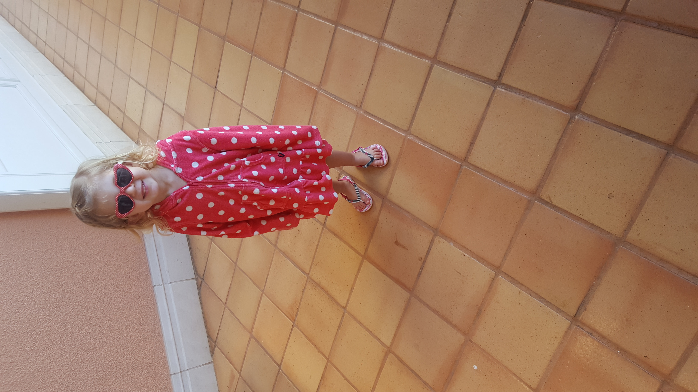
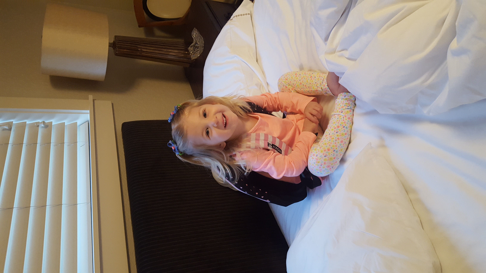
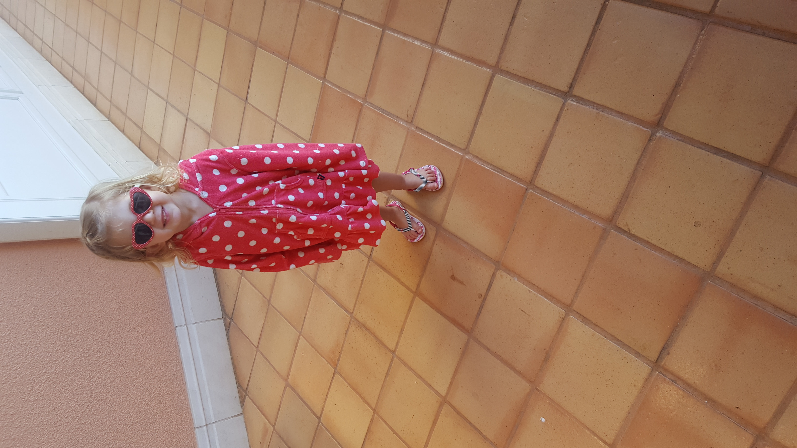
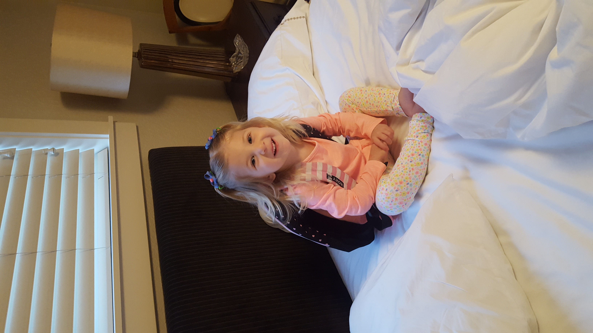

We have finally come now to the great little Miss Paxtyn Harle! When it comes to Paxtyn there is just so much to say, so let's get started. Paxtyn is a real mixture of all her older sisters, a little bit of everything. Adventurous, always wanting to go and try new things, anything that her sisters are doing she has to do the same. Like Piper, she is very independant, wanting to do it herself. Loves to learn new things and expand her knowledge on all subjects. Then when it comes to her alikeness with Payton, she is fearless, jumping from one bed to another, swinging through all obsticals on the playset, and jumping into the deep end of the pool. Now for her similarity with Presley, she is just hilarious! You won't want to miss a moment because you could be missing some true comedy! Honestly I wish I would have written down the hysterical things that she has said, could lift you up on any gloomy day. Now don't forget, Paxtyn is the youngest with three older sisters, she has to compete with so don't think you can push this little dynamite around!